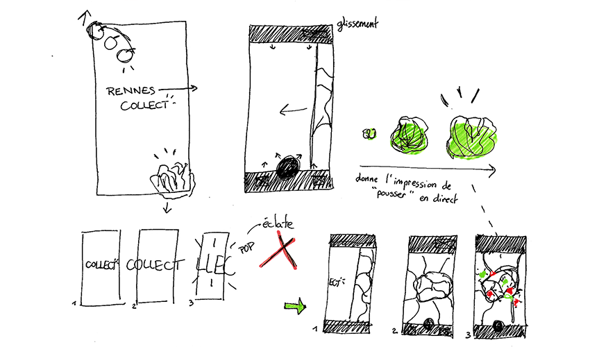

Rennes Ville Nouricière

Application mobile géolocalisant les jardins partagés de la ville de Rennes.
Mise en place d’une fonctionnalité secondaire : proposition de recettes nécessitant des ingrédients de saison.
Identité graphique cherchant à bousculer les mentalités par des visuels sensibles mis en opposition avec des contrastes de couleurs en soi, le tout donnant une application énergisante et incitant au changement des habitudes.
